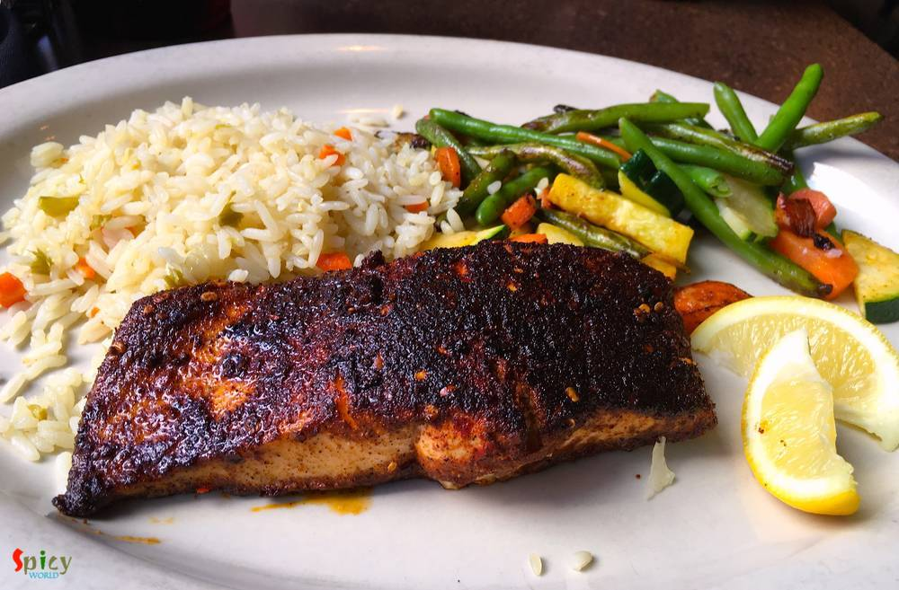
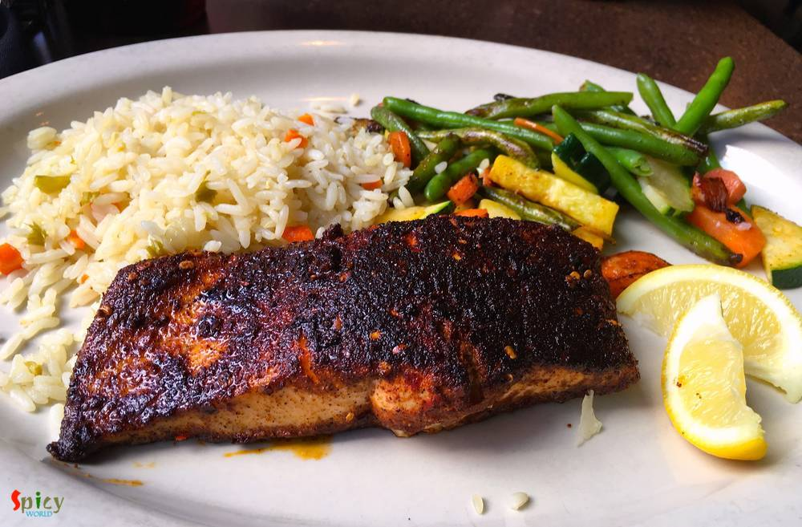

A short Trip to Dallas
I am a homemaker and a food blogger. Both my husband and me love to eat different food as well as travel various US cities. I was planning to share our travel and food experience with you. Presently we are staying at Austin and our last trip was to California on June, 2015. You can think of how much bore we were for not going outside Austin for past 7 months. We celebrated 'Durga Puja', 'Christmas', 'New Year' in Austin but something was missing!!! So, I took the initiative and planned a very short trip to the nearest city, Dallas. We both wanted some relaxation and refreshment. Did we get that in Dallas?? WoW, yeaahhh... We visited the historic Texas city with lot of cultural heritages and true history of the state. Today I am sharing our experience of Dallas with you. As this is my first travel blog so please let me know if you have any suggestions or feedback.

We started our journey from Austin at 11:15AM by Mega Bus and reached to the destination at sharp 3PM. As it was winter, I wouldn't say that scenic view during road journey was good because most of the trees were leafless. Anyway, after reaching there we first went towards our hotel 'The Adolphus' and checked in there. The hotel was at downtown and interior was 80's. The decoration will give you a nice feeling and our room was pretty good. We got little tired after the journey, so, took rest for an hour.


was our first stop after we got out from hotel and walked a little bit towards south on Commerce Street, it was 8 to 10 minutes of walk from our hotel. Old Red Museum or Dallas County Courthouse is also known as Old Red Courthouse. The building is made of red sandstone with marble accents. It is a historic government building. We loved the color and texture of the building. From the opposite side of the street, the view of this building was amazing. That was a busy street with little park and fountains.

is our next destination which is few foot step away from Old Red Museum. This building is one of the historic landmark of Dallas and USA. The plaza was typically visited by tourists now-a-days. Since 1989 more than six million people visited this plaza. The building has its own significance because of president John F. Kennedy's assassination on November 22, 1963. The museum is located at 6th Floor of the Texas School Book Depository building.

is a great place to start day two. We like nature and flowers so this place is the dream place for us. 66 acers of land with lot of flowers, trees and White Rock lake made this place a great tourist destination. We saw lot of families with their kids enjoying the sunny day. We started around 9:30AM from hotel and reached around 10AM, as the public transport is good so we thought of coming here by bus (#060), which takes about 30 minutes (took $5 for both of us). They charged $5 each for the entry fee. We spent around 2 hours in this place and took lot of photos of various kinds of winter flowers and obviously both me and my hubby posed for some awesome pics. We have seen lot of squirrels and captured their activities. We decided to have our lunch at downtown so took the same bus back to downtown.


has lot of exciting things to see, so we started with Thanks-Giving Square, it's a nice place and as usual we started clicking pics. Now time to walk towards the Dallas Museum of Art and just beside that the most happening place 'Klyde Warren Park' a place with food trucks but we just had our lunch so we couldn't enjoy the food. Lot of kids were playing in water as its a pretty hot day and we feel this place a little over crowded but a place to relax, sit and enjoy with family at the heart of downtown. We spent about an hour and now its time to head back to our hotel.


was our first stop for dinner. It's basically a local bar and restaurant with downtown charm. The staff welcomed us and took order from us although it was a self-serviced restaurant. As we were not in mood of drinking, so we ordered Fish and Chips and Chicken Quesadilla with coke. They took 15-20 minutes to arrive. We are a big fan of 'fish and chips' and they served three fresh pieces of deep fried beer-battered cod fillets over loads of uniquely crunchy french fries with mayonnaise and mint sauce. In Austin almost every restaurant serves 'chicken quesadilla' and we tasted them so many times. In 'City Tavern' they grilled the tortillas with stuffing like cooked chicken, vegetables and cheese then served them with salsa sauce and sour cream. I love their taste and also impressed about it's quantity as I ordered from appetizer section. Overall, we were impressed by the polite, friendly nature of the staff and their food. The costs ($21) was pretty much reasonable as well.
our lunch stop after botanical garden. The restaurant was in a busy street, filled with people. But the staffs were very manageable and friendly. We ordered 'Blackened Salmon with rice and grilled veggies' and 'Buffalo chicken Burger' with coke. They served the food within 25 minutes. In the first dish, a medium size fresh salmon patty, some vegetables were grilled and paired with flavorful rice. Well, in the burger boneless chicken was sautéed with spicy buffalo sauce, topped with blue cheese and came with lots of crunchy fries. We enjoyed the food and ambience. Though we were pretty full, but couldn't resist ourselves from having 'Tiramisu Torte' as dessert. Oh boy, the cake was layered, creamy, soft, and less sweet, perfect for us. We left the place after having $48 lunch and with satisfied heart and smiley face.
 


was on the route towards 'old red museum'. I eyed that restaurant from the first day and went there on last day for dinner. Outside as well as inside were fully crowded with loads of wings on each table. After seeing them, we also felt greedy and placed order for 'chicken wings' in 'honey chipotle and margarita chile' sauce and 'fried chicken sandwich' with fries and coke. They offer 19 levels of spice for the chicken wings, can you imagine!!! After 15 minutes the food was served. We started tasting wings, well first 5 minutes were decent, but after that our hands became totally messy with tasty sauces. Then, we noticed it was not only we, every people in that restaurant was in the same condition!! Our sandwich was filled with crispy and saucy boneless chicken strips and was paired with french fries which was dusted with chili powder and salt. We loved each and everything from our $30 order and felt lucky that we didn't miss this one particularly among all others.